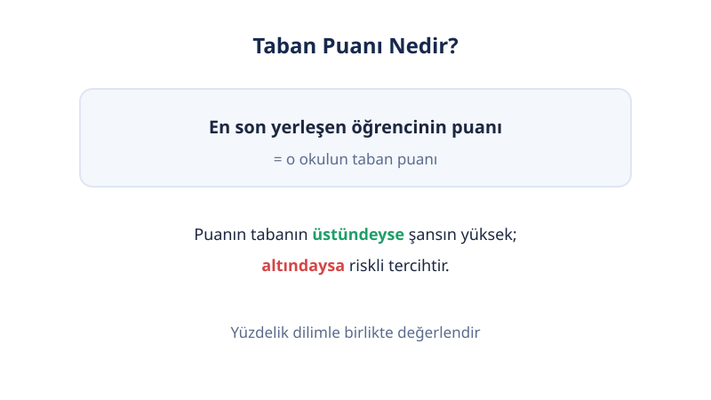
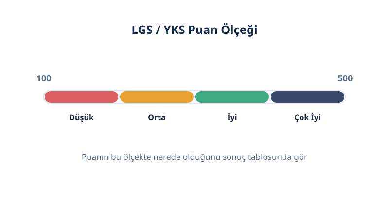

2025 yerleştirme verileri
İzmir LGS Taban Puanları 2026
Son güncelleme: 18 Ekim 2026 · Yazar: PuanRobotu Editör Ekibi
İzmir genelindeki liselerin taban puanları, yüzdelik dilimleri ve 2026 kontenjanları. Tablo başlıklarına tıklayarak sıralayabilirsin.
| Okul | İlçe | Tür | Taban Puan | Yüzdelik Dilim | Kontenjan |
|---|---|---|---|---|---|
| İzmir Fen Lisesi | BORNOVA | Fen Lisesi | 493,96 | %0,14 | 90 |
| Atatürk Lisesi | KONAK | Anadolu Lisesi | 493,96 | %0,14 | 30 |
| Atatürk Lisesi | KONAK | Anadolu Lisesi | 484,69 | %0,58 | 150 |
| Bornova Anadolu Lisesi | BORNOVA | Anadolu Lisesi | 484,16 | %0,59 | 30 |
| Atatürk Lisesi | KONAK | Anadolu Lisesi | 484,01 | %0,59 | 30 |
| Bornova Anadolu Lisesi | BORNOVA | Anadolu Lisesi | 476,40 | %1,13 | 180 |
| Buca İnci-Özer Tırnaklı Fen Lisesi | BUCA | Fen Lisesi | 475,67 | %1,22 | 90 |
| İzmir Kız Lisesi | KONAK | Anadolu Lisesi | 474,82 | %1,26 | 30 |
| Karşıyaka Cihat Kora Anadolu Lisesi | KARŞIYAKA | Anadolu Lisesi | 473,05 | %1,40 | 30 |
| İzmir Kız Lisesi | KONAK | Anadolu Lisesi | 468,12 | %1,82 | 120 |
| Karşıyaka Cihat Kora Anadolu Lisesi | KARŞIYAKA | Anadolu Lisesi | 463,71 | %2,25 | 120 |
| Buca Fatma Saygın Anadolu Lisesi | BUCA | Anadolu Lisesi | 458,40 | %2,76 | 90 |
| Çiğli Fen Lisesi | ÇİĞLİ | Fen Lisesi | 456,69 | %2,95 | 90 |
| Yunus Emre Anadolu Lisesi | BORNOVA | Anadolu Lisesi | 454,00 | %3,23 | 60 |
| Övgü Terzibaşıoğlu Anadolu Lisesi | KARABAĞLAR | Anadolu Lisesi | 451,29 | %3,54 | 120 |
| Tire Belgin Atila Çallıoğlu Fen Lisesi | TİRE | Fen Lisesi | 448,09 | %3,90 | 90 |
| Yunus Emre Anadolu Lisesi | BORNOVA | Anadolu Lisesi | 447,73 | %3,94 | 60 |
| Şehit Ahmet Özsoy Fen Lisesi | MENEMEN | Fen Lisesi | 444,00 | %4,39 | 90 |
| Alev Alatlı Anadolu Lisesi | KARŞIYAKA | Anadolu Lisesi | 442,94 | %4,51 | 60 |
| Güzelbahçe 60.Yıl Anadolu Lisesi | GÜZELBAHÇE | Anadolu Lisesi | 441,78 | %4,65 | 120 |
| Gaziemir Nevvar Salih İşgören Anadolu Lisesi | GAZİEMİR | Anadolu Lisesi | 441,76 | %4,66 | 90 |
| 15 Temmuz Şehitler Anadolu Lisesi | KARŞIYAKA | Anadolu Lisesi | 438,24 | %5,10 | 120 |
| Ödemiş Ayhan Kökmen Fen Lisesi | ÖDEMİŞ | Fen Lisesi | 438,22 | %5,10 | 90 |
| Yusuf Kemalettin Perin Fen Lisesi | BERGAMA | Fen Lisesi | 437,89 | %5,15 | 90 |
| İzmir Anadolu Lisesi | KARABAĞLAR | Anadolu Lisesi | 435,13 | %5,51 | 60 |
| Konak Anadolu Lisesi | KONAK | Anadolu Lisesi | 431,38 | %6,02 | 120 |
| Sezai Karakoç Anadolu Lisesi | ÇİĞLİ | Anadolu Lisesi | 428,01 | %6,49 | 120 |
| İzmir Anadolu Lisesi | KARABAĞLAR | Anadolu Lisesi | 427,46 | %6,57 | 90 |
| Bergamalı Kadri Anadolu İmam Hatip Lisesi | BERGAMA | Anadolu İmam Hatip Lisesi | 424,57 | %6,96 | 40 |
| Balçova Anadolu Lisesi | BALÇOVA | Anadolu Lisesi | 420,43 | %7,55 | 60 |
| Balçova Anadolu Lisesi | BALÇOVA | Anadolu Lisesi | 419,98 | %7,61 | 60 |
| Menderes Fatma-Ramazan Büküşoğlu Anadolu Lisesi | MENDERES | Anadolu Lisesi | 415,51 | %8,28 | 90 |
| Torbalı Sema Karhan Anadolu Lisesi | TORBALI | Anadolu Lisesi | 407,68 | %9,48 | 90 |
| Buca Mehmet Akif Ersoy Sosyal Bilimler Lisesi | BUCA | Sosyal Bilimler Lisesi | 406,77 | %9,63 | 90 |
| Alp Oğuz Anadolu Lisesi | ALİAĞA | Anadolu Lisesi | 406,60 | %9,66 | 120 |
| Narlıdere Cahide-Ahmet Dalyanoğlu Anadolu Lisesi | NARLIDERE | Anadolu Lisesi | 401,31 | %10,53 | 120 |
| Şehit Halil Kantarcı Anadolu İmam Hatip Lisesi | KEMALPAŞA | Anadolu İmam Hatip Lisesi | 394,44 | %11,67 | 48 |
| Ödemiş Ticaret Odası Anadolu Lisesi | ÖDEMİŞ | Anadolu Lisesi | 389,45 | %12,50 | 90 |
| Tire Kutsan Anadolu Lisesi | TİRE | Anadolu Lisesi | 383,89 | %13,47 | 150 |
| İzmir Cengiz Aytmatov Sosyal Bilimler Lisesi | URLA | Sosyal Bilimler Lisesi | 372,55 | %15,52 | 90 |
| Türkiye Odalar ve Borsalar Birliği ALOSBİ Mesleki ve Teknik Anadolu Lisesi | ALİAĞA | Mesleki ve Teknik Anadolu Lisesi | 362,24 | %17,47 | 30 |
| Tire Öğretmen Melahat Aksoy Sosyal Bilimler Lisesi | TİRE | Sosyal Bilimler Lisesi | 359,44 | %18,01 | 60 |
| Şehit Mustafa Yaman Anadolu İmam Hatip Lisesi | GAZİEMİR | Anadolu İmam Hatip Lisesi | 354,91 | %18,92 | 30 |
| Şehit Hakan Gülşen Anadolu İmam Hatip Lisesi | MENEMEN | Anadolu İmam Hatip Lisesi | 354,44 | %19,01 | 30 |
| Bornova Mazhar Zorlu Mesleki ve Teknik Anadolu Lisesi | BORNOVA | Mesleki ve Teknik Anadolu Lisesi | 347,82 | %20,35 | 30 |
| Cumhuriyet Anadolu Lisesi | BERGAMA | Anadolu Lisesi | 346,57 | %20,61 | 60 |
| Urla Hakan Çeken Anadolu Lisesi | URLA | Anadolu Lisesi | 345,96 | %20,74 | 90 |
| Hacı Murat-Hatice Özsoy Anadolu Lisesi | ÇEŞME | Anadolu Lisesi | 345,23 | %20,88 | 60 |
| Türkiye Odalar ve Borsalar Birliği ALOSBİ Mesleki ve Teknik Anadolu Lisesi | ALİAĞA | Mesleki ve Teknik Anadolu Lisesi | 340,33 | %21,93 | 30 |
| Tire Öğretmen Melahat Aksoy Sosyal Bilimler Lisesi | TİRE | Sosyal Bilimler Lisesi | 339,88 | %22,03 | 90 |
| Şehit Mustafa Yaman Anadolu İmam Hatip Lisesi | GAZİEMİR | Anadolu İmam Hatip Lisesi | 339,40 | %22,13 | 40 |
| Seferihisar Necat Hepkon Anadolu Lisesi | SEFERİHİSAR | Anadolu Lisesi | 330,70 | %24,05 | 90 |
| Şehit Hakan Gülşen Anadolu İmam Hatip Lisesi | MENEMEN | Anadolu İmam Hatip Lisesi | 323,32 | %25,73 | 30 |
| Türkiye Odalar ve Borsalar Birliği ALOSBİ Mesleki ve Teknik Anadolu Lisesi | ALİAĞA | Mesleki ve Teknik Anadolu Lisesi | 319,51 | %26,62 | 30 |
| Selçuk Şehit Polis Demet Sezen Mesleki ve Teknik Anadolu Lisesi | SELÇUK | Mesleki ve Teknik Anadolu Lisesi | 317,88 | %27,01 | 30 |
| İzmir Anadolu İmam Hatip Lisesi | KARABAĞLAR | Anadolu İmam Hatip Lisesi | 313,60 | %28,05 | 40 |
| Ülfet Onart Anadolu Lisesi | BAYINDIR | Anadolu Lisesi | 308,20 | %29,40 | 60 |
| Karşıyaka Zeki Şairoğlu Mesleki ve Teknik Anadolu Lisesi | KARŞIYAKA | Mesleki ve Teknik Anadolu Lisesi | 305,38 | %30,11 | 30 |
| Borsa İstanbul Şehit Ömer Halisdemir Anadolu Lisesi | SELÇUK | Anadolu Lisesi | 302,05 | %30,97 | 90 |
| Karşıyaka Zeki Şairoğlu Mesleki ve Teknik Anadolu Lisesi | KARŞIYAKA | Mesleki ve Teknik Anadolu Lisesi | 300,21 | %31,45 | 30 |
| Konak Göztepe Mesleki ve Teknik Anadolu Lisesi | KONAK | Mesleki ve Teknik Anadolu Lisesi | 296,70 | %32,39 | 30 |
| Gazeteci Çetin Altan Mesleki ve Teknik Anadolu Lisesi | BAYRAKLI | Mesleki ve Teknik Anadolu Lisesi | 295,23 | %32,78 | 30 |
| Konak İbn-i Sina Mesleki ve Teknik Anadolu Lisesi | KONAK | Mesleki ve Teknik Anadolu Lisesi | 291,57 | %33,80 | 30 |
| Gazeteci Çetin Altan Mesleki ve Teknik Anadolu Lisesi | BAYRAKLI | Mesleki ve Teknik Anadolu Lisesi | 291,44 | %33,84 | 30 |
| Şehit Ömer Halisdemir Kız Anadolu İmam Hatip Lisesi | KONAK | Anadolu İmam Hatip Lisesi | 288,28 | %34,74 | 30 |
| Konak Mithatpaşa Mesleki ve Teknik Anadolu Lisesi | KONAK | Mesleki ve Teknik Anadolu Lisesi | 285,29 | %35,60 | 30 |
| Konak Mithatpaşa Mesleki ve Teknik Anadolu Lisesi | KONAK | Mesleki ve Teknik Anadolu Lisesi | 277,41 | %37,96 | 30 |
| Gaziemir Şehit Serhat Sığnak Mesleki ve Teknik Anadolu Lisesi | GAZİEMİR | Mesleki ve Teknik Anadolu Lisesi | 264,58 | %42,10 | 30 |
| Aliağa Heydar Aliyev Mesleki ve Teknik Anadolu Lisesi | ALİAĞA | Mesleki ve Teknik Anadolu Lisesi | 260,27 | %43,60 | 30 |
| Bergama Kız Anadolu İmam Hatip Lisesi | BERGAMA | Anadolu İmam Hatip Lisesi | 258,67 | %44,18 | 30 |
| Şehit Kaymakam Muhammet Fatih Safitürk Anadolu İmam Hatip Lisesi | MENDERES | Anadolu İmam Hatip Lisesi | 258,30 | %44,31 | 40 |
| Ödemiş Aydınoğlu Mehmet Bey Anadolu İmam Hatip Lisesi | ÖDEMİŞ | Anadolu İmam Hatip Lisesi | 255,14 | %45,46 | 60 |
| Konak Mithatpaşa Mesleki ve Teknik Anadolu Lisesi | KONAK | Mesleki ve Teknik Anadolu Lisesi | 252,19 | %46,58 | 30 |
| Çiğli 75. Yıl Mesleki ve Teknik Anadolu Lisesi | ÇİĞLİ | Mesleki ve Teknik Anadolu Lisesi | 247,51 | %48,42 | 30 |
| Konak Çınarlı Mesleki ve Teknik Anadolu Lisesi | KONAK | Mesleki ve Teknik Anadolu Lisesi | 247,45 | %48,45 | 30 |
| Kemalpaşa Mopak Mesleki ve Teknik Anadolu Lisesi | KEMALPAŞA | Mesleki ve Teknik Anadolu Lisesi | 247,37 | %48,48 | 30 |
| Arkas Narlıdere Mesleki ve Teknik Anadolu Lisesi | NARLIDERE | Mesleki ve Teknik Anadolu Lisesi | 247,12 | %48,59 | 30 |
| Habaş Hamdi Başaran Mesleki ve Teknik Anadolu Lisesi | ALİAĞA | Mesleki ve Teknik Anadolu Lisesi | 246,08 | %49,02 | 30 |
| Konak Alsancak Nevvar-Salih İşgören Turizm Mesleki ve Teknik Anadolu Lisesi | KONAK | Mesleki ve Teknik Anadolu Lisesi | 244,35 | %49,73 | 60 |
| Bornova Mesleki ve Teknik Anadolu Lisesi | BORNOVA | Mesleki ve Teknik Anadolu Lisesi | 241,74 | %50,85 | 30 |
| Konak Alsancak Nevvar-Salih İşgören Turizm Mesleki ve Teknik Anadolu Lisesi | KONAK | Mesleki ve Teknik Anadolu Lisesi | 236,13 | %53,38 | 30 |
| Konak Nevvar Salih İşgören Eğitim Kampüsü-5 Turizm Mesleki ve Teknik Anadolu Lisesi | KONAK | Mesleki ve Teknik Anadolu Lisesi | 234,68 | %54,06 | 24 |
| İzmir Kız Anadolu İmam Hatip Lisesi | KARABAĞLAR | Anadolu İmam Hatip Lisesi | 232,55 | %55,09 | 30 |
| Konak Çınarlı Mesleki ve Teknik Anadolu Lisesi | KONAK | Mesleki ve Teknik Anadolu Lisesi | 232,01 | %55,36 | 30 |
| Menemen Mesleki ve Teknik Anadolu Lisesi | MENEMEN | Mesleki ve Teknik Anadolu Lisesi | 229,36 | %56,71 | 30 |
| Torbalı Anadolu İmam Hatip Lisesi | TORBALI | Anadolu İmam Hatip Lisesi | 228,83 | %56,98 | 60 |
| 15 Temmuz Şehitleri Kız Anadolu İmam Hatip Lisesi | KONAK | Anadolu İmam Hatip Lisesi | 226,75 | %58,08 | 40 |
| Konak Nevvar Salih İşgören Eğitim Kampüsü Çok Programlı Anadolu Lisesi | KONAK | Mesleki ve Teknik Anadolu Lisesi | 218,94 | %62,53 | 30 |
| Aliağa Ticaret Mesleki ve Teknik Anadolu Lisesi | ALİAĞA | Mesleki ve Teknik Anadolu Lisesi | 217,86 | %63,18 | 30 |
| Bornova Mimar Sinan Mesleki ve Teknik Anadolu Lisesi | BORNOVA | Mesleki ve Teknik Anadolu Lisesi | 215,55 | %64,59 | 30 |
| Karabağlar İTO Vakfı Süleyman Taştekin Mesleki ve Teknik Anadolu Lisesi | KARABAĞLAR | Mesleki ve Teknik Anadolu Lisesi | 212,19 | %66,73 | 30 |
| Şehit İdari Ataşe Çağlar Yücel Mesleki ve Teknik Anadolu Lisesi | KONAK | Mesleki ve Teknik Anadolu Lisesi | 211,06 | %67,48 | 60 |
| Karabağlar İTO Vakfı Süleyman Taştekin Mesleki ve Teknik Anadolu Lisesi | KARABAĞLAR | Mesleki ve Teknik Anadolu Lisesi | 207,51 | %69,90 | 30 |
| İzmir Esnaf ve Sanatkarlar Odaları Birliği Mesleki ve Teknik Anadolu Lisesi | BORNOVA | Mesleki ve Teknik Anadolu Lisesi | 204,09 | %72,31 | 30 |
| Konak Nevvar Salih İşgören Eğitim Kampüsü-5 Turizm Mesleki ve Teknik Anadolu Lisesi | KONAK | Mesleki ve Teknik Anadolu Lisesi | 197,49 | %77,09 | 24 |
| Uluslararası Seferihisar Borsa İstanbul Anadolu İmam Hatip Lisesi | SEFERİHİSAR | Anadolu İmam Hatip Lisesi | 196,99 | %77,46 | 24 |
| İzmir Kız Anadolu İmam Hatip Lisesi | KARABAĞLAR | Anadolu İmam Hatip Lisesi | 195,43 | %78,61 | 30 |
| Konak Nevvar Salih İşgören Eğitim Kampüsü-2 Mesleki ve Teknik Anadolu Lisesi | KONAK | Mesleki ve Teknik Anadolu Lisesi | 194,21 | %79,51 | 30 |
| Şehit Ömer Halisdemir Kız Anadolu İmam Hatip Lisesi | KONAK | Anadolu İmam Hatip Lisesi | 194,07 | %79,62 | 24 |
| Ayrancılar Şehit Cengiz Tokur Kız Anadolu İmam Hatip Lisesi | TORBALI | Anadolu İmam Hatip Lisesi | 194,01 | %79,67 | 24 |
| Bayraklı Hisar Anadolu İmam Hatip Lisesi | BAYRAKLI | Anadolu İmam Hatip Lisesi | 193,95 | %79,72 | 40 |
| Konak Çınarlı Mesleki ve Teknik Anadolu Lisesi | KONAK | Mesleki ve Teknik Anadolu Lisesi | 193,86 | %79,78 | 30 |
| Şehit Erol Olçok Anadolu İmam Hatip Lisesi | BORNOVA | Anadolu İmam Hatip Lisesi | 190,23 | %82,47 | 24 |
| Şehit Bahattin Elden Anadolu İmam Hatip Lisesi | ALİAĞA | Anadolu İmam Hatip Lisesi | 188,48 | %83,74 | 30 |
| Bornova Mazhar Zorlu Mesleki ve Teknik Anadolu Lisesi | BORNOVA | Mesleki ve Teknik Anadolu Lisesi | 186,07 | %85,47 | 30 |
| Buca Necla-Tevfik Karadavut Mesleki ve Teknik Anadolu Lisesi | BUCA | Mesleki ve Teknik Anadolu Lisesi | 184,73 | %86,38 | 30 |
| Necmettin Erbakan Anadolu İmam Hatip Lisesi | KARABAĞLAR | Anadolu İmam Hatip Lisesi | 184,46 | %86,56 | 24 |
| Buca Necla-Tevfik Karadavut Mesleki ve Teknik Anadolu Lisesi | BUCA | Mesleki ve Teknik Anadolu Lisesi | 183,00 | %87,53 | 30 |
| Şehit Abdullah Tayyip Olçok Anadolu İmam Hatip Lisesi | GÜZELBAHÇE | Anadolu İmam Hatip Lisesi | 173,22 | %93,17 | 48 |
| Karabağlar Atatürk Mesleki ve Teknik Anadolu Lisesi | KARABAĞLAR | Mesleki ve Teknik Anadolu Lisesi | 172,69 | %93,42 | 30 |
| Selçuk Yaşar Boyacılık Mesleki ve Teknik Anadolu Lisesi | BORNOVA | Mesleki ve Teknik Anadolu Lisesi | 171,58 | %93,94 | 30 |
| Torbalı Cumhuriyet Mesleki ve Teknik Anadolu Lisesi | TORBALI | Mesleki ve Teknik Anadolu Lisesi | 170,46 | %94,43 | 30 |
| İzmir Ticaret Mesleki ve Teknik Anadolu Lisesi | KONAK | Mesleki ve Teknik Anadolu Lisesi | 168,99 | %95,02 | 30 |
| Selçuk Şehit Er Mehmet Yüce Borsa İstanbul Turizm Mesleki ve Teknik Anadolu Lisesi | SELÇUK | Mesleki ve Teknik Anadolu Lisesi | 168,84 | %95,08 | 30 |
| Karabağlar İTO Vakfı Süleyman Taştekin Mesleki ve Teknik Anadolu Lisesi | KARABAĞLAR | Mesleki ve Teknik Anadolu Lisesi | 168,01 | %95,39 | 30 |
| Bayraklı Ali Osman Konakçı Mesleki ve Teknik Anadolu Lisesi | BAYRAKLI | Mesleki ve Teknik Anadolu Lisesi | 167,57 | %95,56 | 30 |
| Süleyman Şah Mesleki ve Teknik Anadolu Lisesi | BUCA | Mesleki ve Teknik Anadolu Lisesi | 166,30 | %95,99 | 30 |
| Şehit Prof. Dr. İlhan Varank Anadolu İmam Hatip Lisesi | KARŞIYAKA | Anadolu İmam Hatip Lisesi | 163,65 | %96,82 | 60 |
| Sakize Lahur Kız Anadolu İmam Hatip Lisesi | KARŞIYAKA | Anadolu İmam Hatip Lisesi | 162,67 | %97,09 | 30 |
| Şehit Erol Olçok Anadolu İmam Hatip Lisesi | BORNOVA | Anadolu İmam Hatip Lisesi | 161,88 | %97,30 | 30 |
| Abdülhamit Han Mesleki ve Teknik Anadolu Lisesi | GAZİEMİR | Mesleki ve Teknik Anadolu Lisesi | 160,38 | %97,65 | 30 |
| Karabağlar Atatürk Mesleki ve Teknik Anadolu Lisesi | KARABAĞLAR | Mesleki ve Teknik Anadolu Lisesi | 158,91 | %97,95 | 30 |
| Selçuk Şehit Er Mehmet Yüce Borsa İstanbul Turizm Mesleki ve Teknik Anadolu Lisesi | SELÇUK | Mesleki ve Teknik Anadolu Lisesi | 156,77 | %98,35 | 90 |
| Çiğli Mehpare Yağcı Anadolu İmam Hatip Lisesi | ÇİĞLİ | Anadolu İmam Hatip Lisesi | 154,17 | %98,74 | 30 |
| Necmettin Erbakan Anadolu İmam Hatip Lisesi | KARABAĞLAR | Anadolu İmam Hatip Lisesi | 152,59 | %98,94 | 30 |
| Konak Çınarlı Mesleki ve Teknik Anadolu Lisesi | KONAK | Mesleki ve Teknik Anadolu Lisesi | 151,38 | %99,07 | 30 |
| Süleyman Şah Mesleki ve Teknik Anadolu Lisesi | BUCA | Mesleki ve Teknik Anadolu Lisesi | 150,48 | %99,16 | 30 |
| Şehit Ömer Halisdemir Kız Anadolu İmam Hatip Lisesi | KONAK | Anadolu İmam Hatip Lisesi | 146,32 | %99,49 | 30 |
| Buca Necla-Tevfik Karadavut Mesleki ve Teknik Anadolu Lisesi | BUCA | Mesleki ve Teknik Anadolu Lisesi | 144,32 | %99,61 | 60 |
| İzmir Kız Anadolu İmam Hatip Lisesi | KARABAĞLAR | Anadolu İmam Hatip Lisesi | 141,81 | %99,72 | 60 |
| Buca Kız Anadolu İmam Hatip Lisesi | BUCA | Anadolu İmam Hatip Lisesi | 141,37 | %99,74 | 60 |
| İzmir Ticaret Mesleki ve Teknik Anadolu Lisesi | KONAK | Mesleki ve Teknik Anadolu Lisesi | 138,90 | %99,82 | 60 |
Taban puan ve yüzdelik dilimler 2025 MEB merkezi yerleştirme sonuçlarına, kontenjanlar 2026 verilerine aittir. Taban puanlar her yıl değişir.
İzmir Taban Puanları Hakkında
Bu tabloda İzmir ilindeki merkezi sınavla öğrenci alan liselerin 2025 yerleştirme taban puanları ve yüzdelik dilimleri listeleniyor. Taban puan, okula yerleşen son öğrencinin puanıdır; yüzdelik dilim ise tercih döneminde daha istikrarlı bir referanstır.


Kendi puanına uygun okulları otomatik bulmak için LGS Tercih Robotunu, puanını hesaplamak için LGS Puan Hesaplama aracını kullanabilirsin. Diğer iller için tüm illerin taban puanları sayfasına dön.